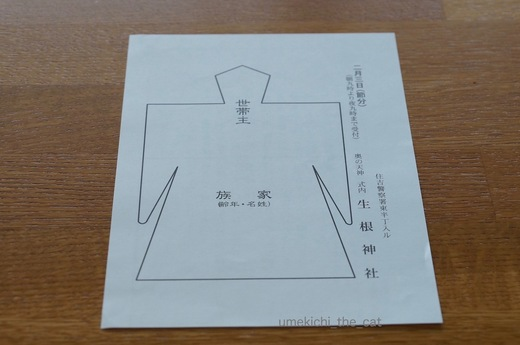
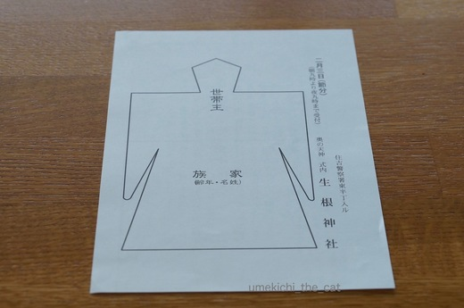

海獣ショー！？ [梅吉]
パソコンに向かっていると視界をよぎるカフェオレ色のかたまり・・・・
ソファの背もたれの向こうにジャンプで現れ消えてゆく様子は
まるで水族館のイルカやシャチのショーみたいです。笑
気になってしかたがないわっ！！
正面から見た動画はこんな感じです。（36秒 時間のある時見てね〜）
日々の訓練の成果か到達点も高く、頂点付近で身を翻してうまく着地するようになってきました。
目指せ、東京猫リンピック 2020（にゃんにゃん？）！
 ↑ガブッと一押し↑
↑ガブッと一押し↑
ポストに入っていた用紙を見て今年もそろそろ節が分かれるのね〜と思う。

この用紙がなんなのか大方の方はご存知なのだと思いますが、大阪に移り住んだ五年前
ポストに入っていたこの用紙を見て
「わぁ〜、なんの嫌がらせだろう。誰かに恨まれるようなことしたっけ？
それにしても形代を送りつけるとは手の込んだいやがらせ。
これが『いけず』っていうものなの〜〜〜〜〜っ」と半分泣きそうになりました。
よくよく用紙を見れば神社の名前が書いてあり、裏側には
「あんたさんの穢れをこの形代で払うさかい節分の日はうちの神社に来てや♡」
とお誘いの言葉。
こんな風習知りませんでした。嫌がらせじゃなくてよかった・・・・・
来週末は節分。用紙に家族の名前と年齢を書き込んで形代に息を吹きかけ体を撫でて
自分の穢れを形代に移してご祈祷をしていただきます。
今年はこっそり梅吉の名前も書いちゃおうかなー。
お振る舞いの「厄除けぜんざい」が楽しみ〜♪
ソファの背もたれの向こうにジャンプで現れ消えてゆく様子は
まるで水族館のイルカやシャチのショーみたいです。笑
気になってしかたがないわっ！！
正面から見た動画はこんな感じです。（36秒 時間のある時見てね〜）
日々の訓練の成果か到達点も高く、頂点付近で身を翻してうまく着地するようになってきました。
目指せ、東京猫リンピック 2020（にゃんにゃん？）！
ポストに入っていた用紙を見て今年もそろそろ節が分かれるのね〜と思う。

この用紙がなんなのか大方の方はご存知なのだと思いますが、大阪に移り住んだ五年前
ポストに入っていたこの用紙を見て
「わぁ〜、なんの嫌がらせだろう。誰かに恨まれるようなことしたっけ？
それにしても形代を送りつけるとは手の込んだいやがらせ。
これが『いけず』っていうものなの〜〜〜〜〜っ」と半分泣きそうになりました。
よくよく用紙を見れば神社の名前が書いてあり、裏側には
「あんたさんの穢れをこの形代で払うさかい節分の日はうちの神社に来てや♡」
とお誘いの言葉。
こんな風習知りませんでした。嫌がらせじゃなくてよかった・・・・・
来週末は節分。用紙に家族の名前と年齢を書き込んで形代に息を吹きかけ体を撫でて
自分の穢れを形代に移してご祈祷をしていただきます。
今年はこっそり梅吉の名前も書いちゃおうかなー。
お振る舞いの「厄除けぜんざい」が楽しみ〜♪

カフェオレ色の梅吉

梅吉 2023年8月10日 永眠


梅吉と出会った譲渡会

犬猫の理由なき殺処分ゼロ
妄想広告
UMEKICHI 光

爆発的に早い！
時々攻撃的！
Thanks to Mr.Boss365
爆発的に早い！
時々攻撃的！
Thanks to Mr.Boss365

ものすごいジャンプ力♪
ちゃんと持ってくるなんて凄すぎです(#^.^#)
投げてくれるのをワクワクしたおめめで！！
もう可愛くてしかたがありません♪
by きぃ (2017-01-23 16:38)
うわぁ～！
キャッチの技術がすんばらしい！
うちは２０，３０回投げてぇ～と言われ遠投して、
ちゃんと持って帰っては来ますが
キャッチしたことはありません。
鍛えようかしら( ´艸｀)
by Moon (2017-01-23 17:21)
梅吉君のイルカショーいいですね。そりゃ見ちゃうわ(=^・^=)
うちの住んでる地域では6月と12月に形代が配られます。ちぃさん所は節分なんですね。
by palpal (2017-01-23 17:29)
素晴らしい！！
アスリートだわ！！！
我家の猫は猫じゃない
飛べない・・・・走れない・・・・とにかくスロー＼(゜ロ＼)(／ロ゜)／
by みいこ (2017-01-23 17:37)
梅吉さんナイスキャッチ! すご~い!!!
うちは東京ですが、これポストに入ってます。
お祓いを頼んだ事はありません。
by zombiekong (2017-01-23 18:36)
形代初めて見ました！
そんなものがポストに入ってくるんですね…私もビックリすると思います(°_°)
梅吉君、素晴らしい！
とるだけじゃなくて持ってこれるなんて！
猫のレトリーブ、動画部門(猫は競技会とか無理そうなので)でかなりの線に行くと思います(*ﾟv`)ﾉ
by BillK-ko (2017-01-23 18:38)
梅吉選手、キャッチがすばらしい(*^▽^*)
ウチのガブリエルと違って捕まえた後ガブガブ噛まずに戻ってくるのが賢い！！
長いこと大阪ですが、形代がポストに入ってたことないです。
初めて見ました^^;
by ゆきち (2017-01-23 19:40)
動画見ました！
すごいジャンプ！そしてちゃんとキャッチして
空中で姿勢を変えて着地！
まるで猫のようです！！(^_^;)
by よーちゃん (2017-01-23 21:14)
梅吉さん、すごいジャンプですね！
着地もお見事！こりゃ内村航平選手も真っ青！！^^;
形代？？？初めて知りました。
地域によっていろいろな風習があるのですね。^^)
by yes_hama (2017-01-23 21:31)
よ〜く、目を凝らして見ていますね。
凄い頂点で取っていますね。
着地の時は加えていますから、凄いです。
大阪は8年めに入りますが、形代は初めて見ました。
by kiki (2017-01-23 22:07)
梅吉さん！！！(・o・)
ちゃんと持ってくるのがスゴい。
ゆづは全然しません(><)なので下僕は、球出し状態で
10個近くピンポン球を用意しております〜。
形代…。へ〜へ〜へ〜へ〜！！！
こんなの見たら、呪いをかけられたかと真っ青になりそう。
そうじゃないんですね〜！！
そういえば｢陰陽師｣で安倍晴明が息吹きかけたりしていたのは
こういうやつだったかな？？
by も〜 (2017-01-23 22:11)
梅吉さん、さすが漢♪( ´▽｀)
なんて華麗で見事なジャンピングキャッチ*\(^o^)/*
空中でひねりが入るなんて素晴らしい運動神経ですねぇ( ^ω^ )
by ニッキー (2017-01-23 22:42)
梅吉くん、ナイスキャッチ。
そして、ナイスショット！(^ ^)
by はな (2017-01-24 09:32)
梅吉くん、すごい！すばらしい身のこなし！！
うみも昔は出来たのに今はお腹周りが重たいらしく無理ｗ
あおは尻もちつくしー(笑)
猫は、梅吉みたいな感じじゃなくちゃ！ｗｗ
西のほうだとやっぱり風習ちがうことがありますよね。
わたしももしコレみたら、一瞬かたまるかも(笑)
うちは日光の輪王寺の祈祷用紙にいつもあお＆うみの名前書いてますよｗ
日本風な名前だから梅吉くんも平気だよｗｗ
by リュカ (2017-01-24 10:13)
梅吉さん！ジャンプはルディも負けてませんよ！
しかし、あの身の翻しはかないません〜！
投げる前の梅吉さんの表情が、投げる前のルディの表情とそっくりです(^ ^)
by ルディパパ (2017-01-24 11:08)
可愛いですね!!!!
静止画ですので、カフェオレ色のかたまりが
ラジオ体操してるように見えました!!
by Y.Tachi (2017-01-24 15:34)
きぃさん＞ちゃんと持ってくるんですよ〜。
猫のレトリーブ大会ないかしら・・・笑
投げてほしくてお目目キラッキラで来るのでやめられません・・・辛い。
Moonさん＞ちくわさんも持って来るのですね〜仲間、仲間♪
梅吉はジャンプしてキャッチも得意ですがドリブルもいけます。
なかなかの高速ドリブラーなんですがシュート先が
自分の飲み水の中・・・・おもちゃがプカプカしてゲーム終了。
なんでだろう・・・
palpalさん＞うちの近くの別の神社は年末に形代のお祓いをしています。
何かの節目の時に、ということであとは神社の自由裁量なのかしら・・・笑
梅吉イルカショー、イルカの背に乗って欲しいと思っているおかーさんです。
みいこさん＞ありがとうございます♪梅吉すごいでしょう？
飛ぶのもにゃんこ、飛ばないのもにゃんこ。みんなかわいい〜♪
zombiekongさん＞東京でも形代ポストイン、の地域があるのですね。
初めての年はお祓いはしてもらいませんでした。
その時は用紙の扱いに困って（ゴミ箱に捨てるものなんだか寝覚めが悪くって）
神社の古札納所に持っていきましたよ。
その後はせっかくだから（有料だけど）お祓いしてもらってます。ぜんざい目当て。笑
by ちぃ (2017-01-24 17:50)
BillK-koさん＞薄暗いマンションのメールボックス室で形代を見たときの
衝撃といったら・・・軽く「ひっ」って声出たよ〜。笑
そうそう「電線音頭」じゃなくて「東村山音頭」だわ！
伊東四朗さんじゃなくて志村けんさん。
UFOが踊れるなら間違いなく同世代よ〜♪
ゆきちさん＞戻ってくるのは遊んで欲しい一念かと思われます。
多分何も考えてない。筋肉がダイレクトに反応するタイプ。笑
形代は各神社の担当区域が決まっていて
府内全域くまなく配られると思っていました〜。
うちは下町だからこの風習？神社の人の営業力？
地域の掲示板にもポスターたくさん貼ってあるから営業の人やり手なのかも〜^^
よーちゃん＞海獣なのに毛深いし！笑
毛布にくるまってぬくぬくしている生き物とは別物みたいです。
by ちぃ (2017-01-25 06:08)
yes_hamaさん＞指先爪先まで美しい、そして着地も完璧なジャンプを目指します！
2020年はメダルを取りますよ！！なんの競技かは不明ですが・・・^^;
形代は安倍晴明が「呪」をかけるのに使うものと思っていたので
日常に登場してきてびっくりしました。
kikiさん＞空中で手でキャッチしたものをすぐさま口にくわえ直して
4本足で着地する高等テクです！
誰に教わったわけでもないのにすごいな〜と思いました。
kikiさんの地域でも形代配布は無しなんですね。
みんな一緒ではなく、ひとくくりに出来ないところが関西らしい
面白いところだな〜と改めて思いました。
も〜さん＞ピンポン球は単なるブームでは無いようで
ゆづくんお気に入りの遊びになったのですね。
１０個球、阿修羅みたいに手がいっぱいあったら便利そうだ〜。
形代は安倍晴明の本や映画でみて「呪をかけるもの」と思っていたので
自分の日常生活に登場してくるとはゆめ夢おもわず・・・・^^;
晴明さんが息を吹きかけていたのは人型に切り抜いてありましたよね。
人型のがポストに入っていたら更におどろおどろしかっただろうな〜。
ニッキーさん＞練習を重ねるうちにひねりが加わるようになりました。
実は、うまく投げないと梅吉も取りにくいらしく
ミススローをすると「ちっ・・・」と言う顔をされます^^;
投げ手、取り手の呼吸も大切。私よりおっとが上手い・・・・
by ちぃ (2017-01-25 09:05)
はなさん＞ありがとうございます♪
写真は連写で撮りました。ボツ写真の多かったこと！笑
リュカさん＞ダイエットがんばったら体もキレッキレになったみたいww
形代にはかな〜り固まりました。
転勤で慣れない関西に来てへろへろ気味の時だったので
人型にくりぬいた紙だったら
「私、札幌にかえる！」って言ってたかもね〜。笑
もう梅吉の名前書きましたよんv
ルディパパさん＞わんこさんもびっくりのレトリーブでしょう？
ジャンプはルディくんにかなわないとして
お目目のキラキラ度は良い勝負になるかもしれませんね。笑
あんな期待のこもった目で見られるとやめられなくて困ります^^;
Y.Tachiさん＞ありがとうございます♪
よ〜く伸びた感じがラジオ体操っぽいかも！
梅吉が小学生だったら夏休みのラジオ体操は皆勤賞もらえそう。
すぐ張り切るタイプ。笑
by ちぃ (2017-01-25 11:28)